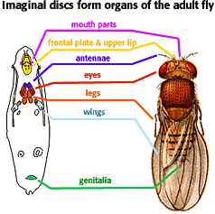

Developmental Mechanisms Problem Set
Problem 8 Tutorial: Embryonic origin of the segments of the adult fruit fly
| During development of the fruit fly, the segments of the adult body, including head, three thoracic, and eight abdominal segments, derive from undifferentiated cells in the larva known as: |
|
Imaginal discs are found in the larvae of insects such as fruit flies and butterflies. During metamorphosis, these discs proliferate and differentiate to form specific structures in the adult. The illustration to the right shows which imaginal discs in the larva develop into which structures in the adult fly.
The destiny of an imaginal disc is determined long before metamorphosis begins. This destiny stays with the disc even if it is transplanted into another larva. |
 Fly illustration by T.H. Morgan. |


Contact the Development Team
http://biology.arizona.edu
All contents copyright © 1996. All rights reserved.